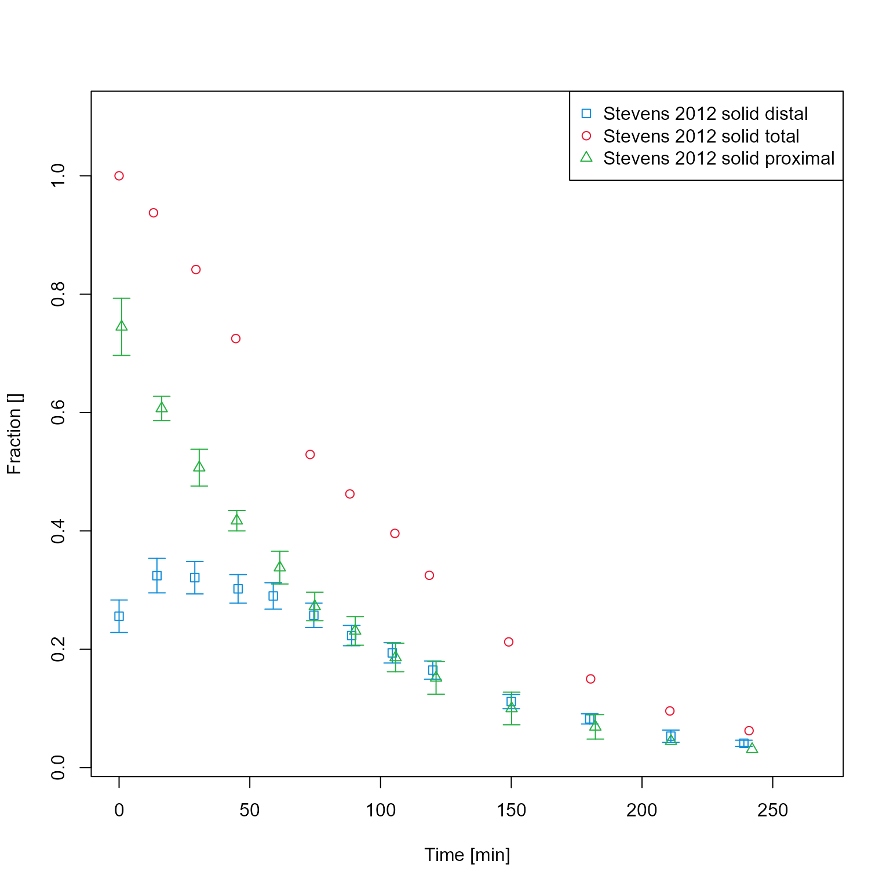
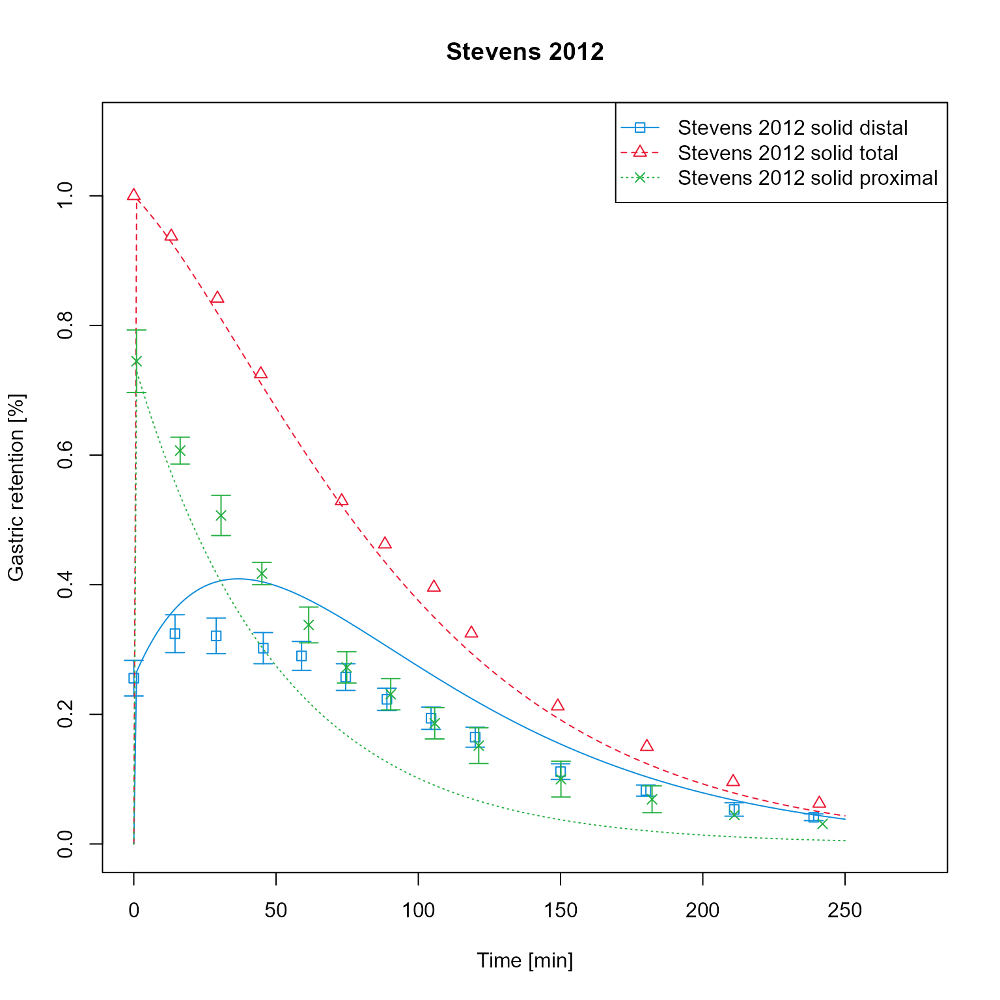

This package offers a workflow for creating standardized figures for
time-values data, such as time-concentration profiles, goodness-of-fit
plots, etc. The integral part of these workflows are the objects of the
class DataMapping. A DataMapping organizes the
objects of the class XYData (see Data handling for more information) into
groups and maps simulation results to observed data.
DataMapping overview
The first step in organizing the data in a DataMapping
object and creating figures is the creation of an empty
DataMapping object.
dataMapping <- DataMapping$new()
print(dataMapping)
#> DataMapping:
#> Plot type: IndividualProfile
#> Population quantiles: 0.05 0.5 0.95
#> labels:
#> X limits: 0 0
#> Y limits: 0 0
#> X label:
#> Y label:
#> X unit:
#> Y unit:
#> Title:
#> Log axes:In the next step, the mapping is populated with xy-values series that can be organized into groups.
Plotting observed data
Create a data configuration that describes where to find data and which sheets to load and load the data:
dataConfiguration <- DataConfiguration$new(
dataFolder = file.path(getwd(), "..", "tests", "data"),
dataFile = "CompiledDataSet.xlsx",
compoundPropertiesFile = "Compound_Properties.xlsx",
dataSheets = c("Stevens_2012_placebo")
)
observedData <- readOSPSTimeValues(dataConfiguration)Add loaded data to DataMapping
dataMapping <- DataMapping$new()
dataMapping$addXYData(
list(
observedData$Stevens_2012_placebo$Placebo_distal,
observedData$Stevens_2012_placebo$Placebo_proximal,
observedData$Stevens_2012_placebo$Placebo_total
),
groups = list(
"Stevens 2012 solid distal",
"Stevens 2012 solid proximal",
"Stevens 2012 solid total"
)
)
dataMapping$plot()
!!! It is not possible to change the labels of data in the legend
after the data have been added to the mapping because the data are
references in the mapping by their label. Changing the label of a
XYData-object will lead to the problem that it will not be
found by DataMapping any more. If required, a method of
DataMapping must be implemented
setLabel(oldLabel, newLabel). It will change the label of
the XYData-object but also the corresponding name in the
list of DataMapping. Check should be performed that a new
label is not used already. Not feasable to implement before switching to
TLF.
It is possible to change the axis labels and figure title.
dataMapping$xLab <- "Time [min]"
dataMapping$yLab <- "Gastric retention [%]"
dataMapping$title <- "Stevens 2012"
dataMapping$plot()Add simulation results to the mapping. For this example, the results have been saved as csv and are loaded. Simulation results are assigned to the respective groups and therefore have same colors as observed data of the same group.
sim <- loadSimulation(file.path(getwd(), "..", "tests", "data", "Stevens_2012_placebo_indiv_results.pkml"))
simResults <- importResultsFromCSV(simulation = sim, filePaths = file.path(getwd(), "..", "tests", "data", "Stevens_2012_placebo_indiv_results.csv"))
dataMapping$addModelOutputs(
paths = list(
"Organism|Lumen|Stomach|Metformin|Gastric retention",
"Organism|Lumen|Stomach|Metformin|Gastric retention distal",
"Organism|Lumen|Stomach|Metformin|Gastric retention proximal"
),
simulationResults = simResults,
list(
"Stevens_2012_placebo solid total sim",
"Stevens_2012_placebo solid distal sim",
"Stevens_2012_placebo solid proximal sim"
)
)
dataMapping$plot()Add simulation results to the mapping, assigning to the correct groups. Simulation results are now have same colors as observed data of the same group. As the labels of the assigned data sets are equal as the ones assigned in the previous steps, the previous sets are overwritten.
dataMapping$addModelOutputs(
paths = list(
"Organism|Lumen|Stomach|Metformin|Gastric retention",
"Organism|Lumen|Stomach|Metformin|Gastric retention distal",
"Organism|Lumen|Stomach|Metformin|Gastric retention proximal"
),
simulationResults = simResults,
list(
"Stevens_2012_placebo solid total sim",
"Stevens_2012_placebo solid distal sim",
"Stevens_2012_placebo solid proximal sim"
),
groups = list(
"Stevens 2012 solid total",
"Stevens 2012 solid distal",
"Stevens 2012 solid proximal"
)
)
dataMapping$plot()
It is possible to change the units of the axis. Mind that axis labels
are not automatically adjusted. It could be implemented that the default
label (if not set by user) is always Dimension [unit]
dataMapping$xUnit <- "h"
dataMapping$yUnit <- "%"
dataMapping$xLab <- paste(dataMapping$xDimension, "[", dataMapping$xUnit, "]")
dataMapping$plot()Create a clone of the data mapping and change its plot type to “predicted vs observed”.
dataMappingPvO <- dataMapping$clone(deep = TRUE)
dataMappingPvO$log <- ""
dataMappingPvO$plotType <- PlotTypes$PredictedVsObserved
dataMappingPvO$plot()Add additional fold range and plot in logarithmic scale
dataMappingPvO$log <- "y"
dataMappingPvO$plot(foldDistance = c(2, 5))
Create a clone of the data mapping and change its plot type to “BoxPlot”.
dataMappingBoxPlot <- dataMapping$clone(deep = TRUE)
dataMappingBoxPlot$plotType <- PlotTypes$BoxPlot
dataMappingBoxPlot$plot()Axis limits can be manually set
Setting factors and offset
labels <- names(dataMapping$xySeries)
configuration <- DataMappingConfiguration$new()
configuration$setXFactors(labels = c(labels[[1]], labels[[2]]), xFactors = c(2, 0))
configuration$setYFactors(labels = c(labels[[1]], labels[[2]]), yFactors = c(3, 2))
configuration$setXOffsets(labels = c(labels[[1]], labels[[2]]), xOffsets = c(3, 2))
configuration$setYOffsets(labels = c(labels[[1]], labels[[2]]), yOffsets = c(3, 2))
dataMapping$setConfiguration(dataMappingConfiguration = configuration)
dataMapping$plot()Change axes scale to log
dataMapping$log <- "y"
dataMapping$plot()If results of a population simulation are available, these can be plotted as mean +- percentile intervals.
dataMappingPop <- DataMapping$new()
dataMappingPop$addXYData(
list(
observedData$Stevens_2012_placebo$Placebo_distal,
observedData$Stevens_2012_placebo$Placebo_proximal,
observedData$Stevens_2012_placebo$Placebo_total
),
groups = list(
"Stevens 2012 solid distal",
"Stevens 2012 solid proximal",
"Stevens 2012 solid total"
)
)
sim <- loadSimulation(file.path(getwd(), "..", "tests", "data", "Stevens_2012_placebo_indiv_results.pkml"))
popResults <- importResultsFromCSV(simulation = sim, filePaths = file.path(getwd(), "..", "tests", "data", "Stevens_2012_placebo_pop_results.csv"))
dataMappingPop$addModelOutputs(
paths = list(
"Organism|Lumen|Stomach|Metformin|Gastric retention",
"Organism|Lumen|Stomach|Metformin|Gastric retention distal",
"Organism|Lumen|Stomach|Metformin|Gastric retention proximal"
),
simulationResults = popResults,
labels = list(
"Stevens_2012_placebo solid total sim",
"Stevens_2012_placebo solid distal sim",
"Stevens_2012_placebo solid proximal sim"
),
groups = list(
"Stevens 2012 solid total",
"Stevens 2012 solid distal",
"Stevens 2012 solid proximal"
)
)
dataMappingPop$plotType <- PlotTypes$PopulationQuantiles
dataMappingPop$plot()Multiple data mappings can be plotted in one figure using the
plotMultiPanel function. This function requires a
PlotConfiguration that allows more control over the
output.
plotConfiguration <- PlotConfiguration$new()
plotConfiguration$outputName <- "Gastric emptying solid meal"
plotConfiguration$addTitle <- TRUEPlot the four data mappings together
plotMultiPanel(
dataMappingList = list(dataMapping, dataMappingPvO, dataMappingBoxPlot, dataMappingPop),
plotConfiguration = plotConfiguration
)#> NULL